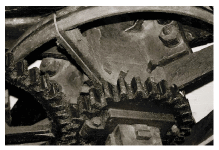

Preface
What’s this book about?
I’m concerned about cutting UK emissions of twaddle – twaddle about sustainable energy. Everyone says getting off fossil fuels is important, and we’re all encouraged to “make a difference,” but many of the things that allegedly make a difference don’t add up.
Twaddle emissions are high at the moment because people get emotional (for example about wind farms or nuclear power) and no-one talks about numbers. Or if they do mention numbers, they select them to sound big, to make an impression, and to score points in arguments, rather than to aid thoughtful discussion.
This is a straight-talking book about the numbers. The aim is to guide the reader around the claptrap to actions that really make a difference and to policies that add up.
This is a free book
I didn’t write this book to make money. I wrote it because sustainable energy is important. If you would like to have the book for free for your own use, please help yourself: it’s on the internet at www.withouthotair.com.
This is a free book in a second sense: you are free to use all the material in this book, except for the cartoons and the photos with a named photographer, under the Creative Commons Attribution-Non-Commercial-ShareAlike 2.0 UK: England & Wales Licence. (The cartoons and photos are excepted because the authors have generally given me permission only to include their work, not to share it under a Creative Commons license.) You are especially welcome to use my materials for educational purposes. My website includes separate high-quality files for each of the figures in the book.

How to operate this book
Some chapters begin with a quotation. Please don’t assume that my quoting someone means that I agree with them; think of these quotes as provocations, as hypotheses to be critically assessed.
Many of the early chapters (numbered 1, 2, 3, …) have longer technical chapters (A, B, C, …) associated with them. These technical chapters comprise Part III.
At the end of each chapter are further notes and pointers to sources and references. I find footnote marks distracting if they litter the main text of a book, so the printed book had no footnote marks. Discrete end-note marks have been added to this ebook to allow easy referencing.
The text also contains pointers to web resources. When a web-pointer is monstrously long, I’ve used the TinyURL ervice, and put the tiny code in the text like this – [yh8xse] – which is shorthand for a tiny URL, in this case: http://tinyurl.com/yh8xse. A complete list of all the URLs in this book is provided at http://tinyurl.com/yh8xse.
I welcome feedback and corrections. I am aware that I sometimes make booboos, and in earlier drafts of this book some of my numbers were off by a factor of two. While I hope that the errors that remain are smaller than that, I expect to further update some of the numbers in this book as I continue to learn about sustainable energy.
How to cite this book:
David J.C. MacKay. Sustainable Energy – without the hot air.
UIT Cambridge, 2008. ISBN 978-0-9544529-3-3. Available free online from www.withouthotair.com.
Preface to the 2026 revision
Everything above is David MacKay’s, written for the 2008 edition and left as he wrote it. What follows is this edition’s.
MacKay’s method was to put numbers on both sides of a balance sheet and see whether they met. Eighteen years later the arithmetic still works; many of the numbers do not. British energy consumption has fallen by about two fifths, solar modules cost roughly a twentieth of what they did, nuclear construction costs have gone the other way, and an entire category of demand — the data centre — has grown from a footnote into a chapter. This edition redoes the sums against current data and says so wherever it does.
Two rules govern the revision. MacKay’s own text and figures are reproduced unchanged, and everything added here is marked as added. Where this edition disagrees with him, it says which number changed and why, rather than quietly overwriting him.
What has been added
Five new chapters. They follow MacKay’s own conventions: a number for the chapters in the main argument, a letter for the technical ones.
- 11a · The machines behind the screen — data centres and machine learning, the demand chapter 11 could only glimpse in 2005.
- 28a · The value of renewable energy as it scales — what happens to the economic value of renewable electricity as it grows to the scale MacKay’s balance sheet calls for. His book asks whether the physics permits it; this asks what happens to the price when it does.
- L · The world in 2025 — MacKay’s global stock-take, redone for the most recent complete year.
- M · Energy return on investment — the energy cost of getting energy, which chapter 3 raises and then sets aside.
- N · Peak oil, peak gas, peak uranium — chapter 23’s Jevons calculation applied to the three fuels it left out.
Revised chapters. Every chapter of the original has been gone through. Where a figure has moved, the current one is given alongside MacKay’s with the source for both; where his conclusion still holds, that is said too. The largest revisions are to the chapters on transport, heating, solar, nuclear and the cost of a plan.
Figures drawn from live data. Forty-three of this edition’s figures are generated rather than redrawn, from a data-refresh pipeline of twenty-six steps that pulls from the Energy Institute’s Statistical Review of World Energy, Our World in Data, Ember, Elexon and the ENTSO-E transparency platform. Each such figure carries a footnote naming the step that produced it, so any number in it can be traced back to its source and regenerated.
Sterling conversions. Prices taken from foreign sources are given in the source’s own currency with a sterling equivalent alongside. The rates are stated and dated once, in the Money section of chapter I, rather than repeated in every chapter.
Copyright and licence
The original work is © 2008 David J. C. MacKay, licensed by him under the Creative Commons Attribution-Non-Commercial-ShareAlike 2.0 UK: England & Wales Licence, as his preface above sets out.
New and revised material in this edition is © 2026 Örjan Lundberg and is released under the same licence. This is not merely permitted but required: the ShareAlike term obliges any adaptation to carry a licence with the same elements. You are therefore free to copy, adapt and redistribute this edition, for non-commercial purposes, provided you attribute David MacKay for the original work and this edition’s contributors for the revisions, and license what you make onward on the same terms.
Three things in the original are not covered by that licence, because MacKay’s own permission did not extend to them: the Private Eye cartoons, photographs credited to a named photographer, and third-party figures carrying their own rights, including the Ordnance Survey maps marked “© Crown copyright”. These are omitted here and marked where they stood.
How to cite this edition:
David J. C. MacKay, revised by Örjan Lundberg. Sustainable Energy — Without the Hot Air, 2026 revised edition. Available free online from oluies.github.io/climate.